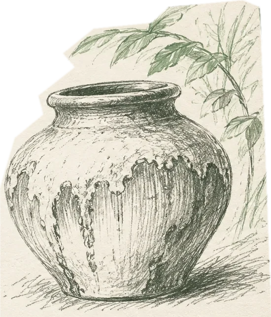

Draw the contour
Look at the outside edge. Try a single line from one side of the rim, around the foot, to the other side.
Take a printable contour exercise or save a short written observation about a vessel.

Look at the outside edge. Try a single line from one side of the rim, around the foot, to the other side.
Choose a small patch of glaze, a line at the lip or a seam. Draw it larger than life.
Write something that looking alone cannot answer. Would the craftsperson know the answer?